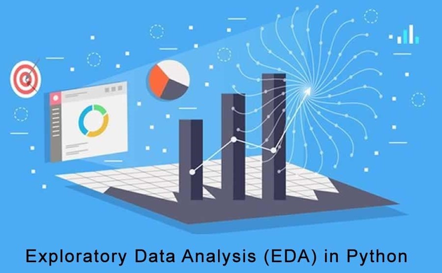
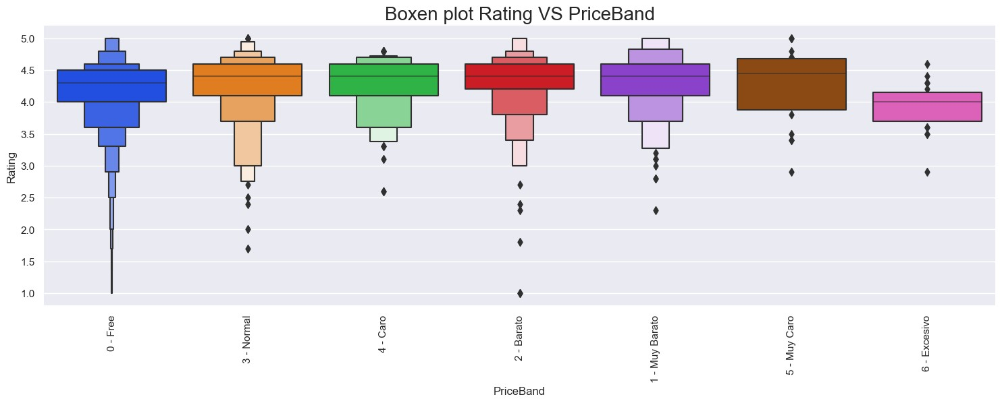
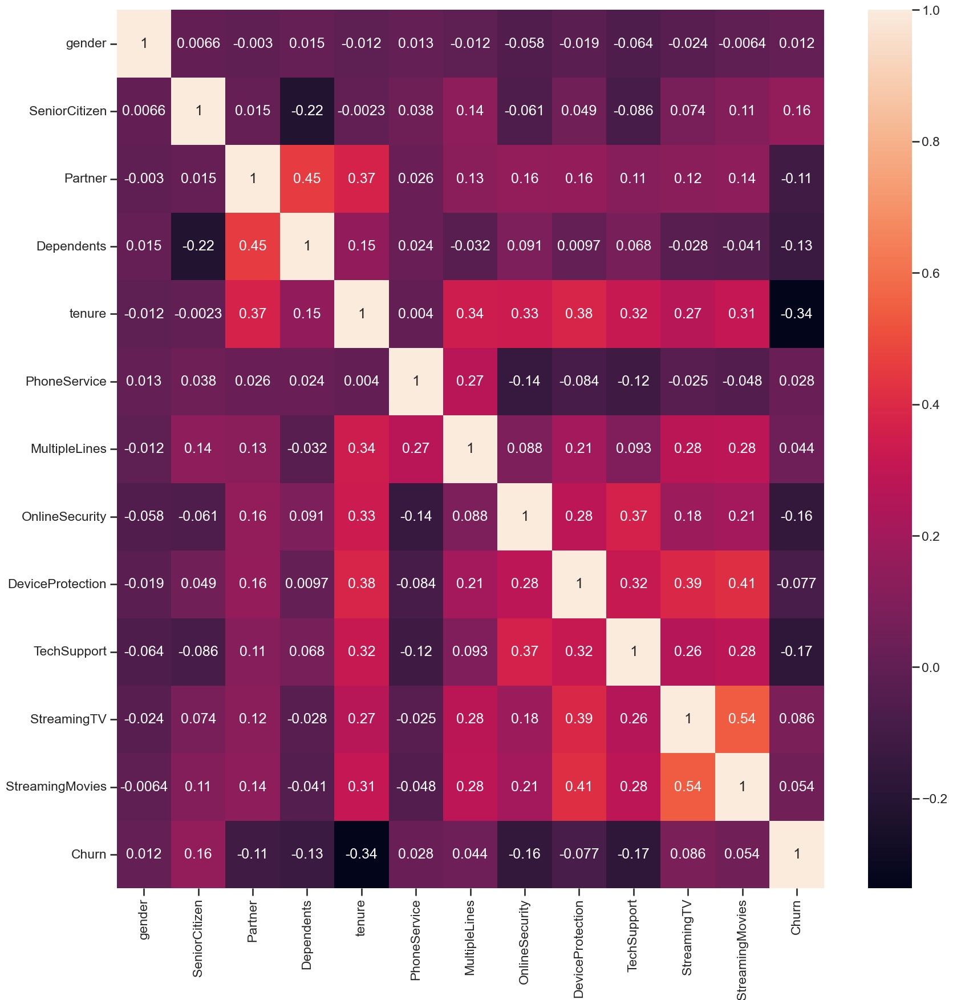

Me encuentro en formación para convertirme en Data Scientist, motivado por las posibilidades que esto me brinda para aplicar mis habilidades analíticas y resolver problemas complejos.
Mi formación en Ingeniería Industrial me ha proporcionado una amplia comprensión de los procesos empresariales y una sólida base en modelos matemáticos, estadística y programación.
Considero que estas habilidades son esenciales para un Data Scientist, y me siento cómodo utilizando diferentes herramientas de procesamiento y visualizacion de datos.
🌱SKILLS & TECHNOLOGIES🌱
- SQL
- Python
→ Control de librerías para Análisis y Visualizacion de datos: Pandas, Matplotlib, Seaborn, NumPy, SciPy.
→ Control de librerias para Machine Learning: Scikit-learn, Keras, TensorFlow, PyTorch.
- Gloogle Cloud Plataform
Bienvenido a mi cartera de proyectos sobre Análisis de Datos 🔎

Aplicación de técnicas de análisis exploratorio de datos (EDA) sobre set de datos procedente del Instituto Nacional de Diabetes y Enfermedades Digestivas y Renales (NIDDK).
Este proyecto se enfoca en aplicar técnicas de aprendizaje automático supervisado para predecir el precio de las noches de hogares de AIRBNB utilizando un dataset proporcionado.

En este proyecto se aplican técnicas de limpieza y análisis de datos sobre un dataset procedente de la App Store y ciertas apps con información de descargas, pesos y precios.
A través de consultas en SQL, comprobaremos si los ingresos han crecido en estos años, y luego analizaremos el impacto en el aparcamiento del hotel, buscando tendencias que nos ayuden a mejorar el negocio.

El proyecto tiene como objetivo analizar una cartera de clientes proporcionada por la empresa Telco NN para detectar a aquellos que podrían abandonar la compañía. Para lograr esto, se realizará un análisis exploratorio de los datos y se aplicarán modelos de aprendizaje supervisado utilizando técnicas de machine learning para predecir si los clientes abandonarán la compañía o no.